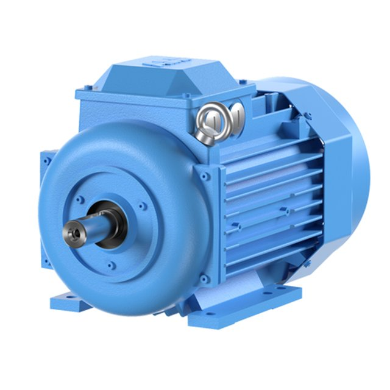
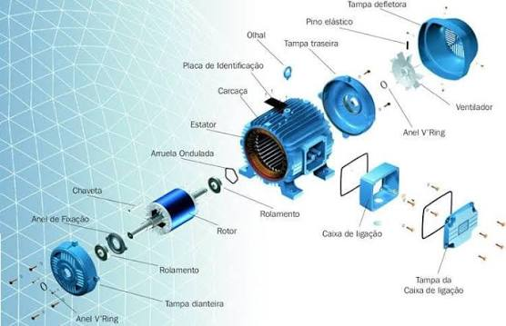

ELETROLAB / ANATOMIA INTERATIVA
Engenharia por dentro.
Um motor. Cada peça. Explore como tudo se conecta.
Conjunto montadoARRASTE PARA DESMONTAR ↔
01 — MOTOR ELÉTRICOIlustração didática • vista axial em perspectiva
01 / COMPACTO02 / EXPANDIDO
↗
DESCUBRA O CONJUNTO
As peças se afastam. A conexão fica clara.
Mova a barra ou arraste sobre o motor. Com o conjunto aberto, toque em uma peça para conhecer sua função.
Ver as fotografias de referência +

